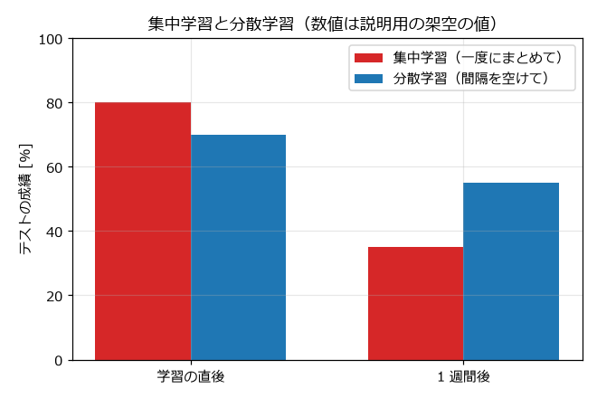

5. 効果が確認された学習法
本章では、研究によって効果が確認された学習法を紹介する。いずれも特別な道具や才能を必要とせず、どの分野の独学にも応用できる。最後に、学習中の成績と長期の定着が一致しない理由である「望ましい困難」を説明し、学習法を比較表にまとめる。
5.1. Dunlosky らのレビューの概要
Dunlosky ら（2013）は、学生がよく使う、または研究者が有望と考える 10 種類の学習法を取り上げ、それまでの膨大な研究をもとに有用性を評価した。評価では、さまざまな学習者、教材、テストの形式、時間の経過に対して効果が一般化するかが重視された。結果を以下に示す。
学習法 |
内容 |
有用性の評価 |
|---|---|---|
練習テスト |
自分でテストをして思い出す練習をする。 |
高い |
分散学習 |
学習を時間的に分散させる。 |
高い |
精緻化質問 |
事実について「なぜそうなるのか」を自分に問い、説明を考える。 |
中程度 |
自己説明 |
学んだ内容や問題を解く手順を、自分に説明する。 |
中程度 |
交互練習 |
異なる種類の問題を混ぜて練習する。 |
中程度 |
要約 |
学んだ内容の要約を書く。 |
低い |
マーカー引き |
重要な箇所に線を引く。 |
低い |
キーワード法 |
覚えたい語に、音が似た語とイメージを結びつける。 |
低い |
イメージ化 |
文章を読みながら、その内容を心の中で絵にする。 |
低い |
再読 |
読んだ内容を読み返す。 |
低い |
「低い」と評価された学習法が無意味というわけではない。例えば要約は、要約の書き方を十分に訓練した学習者には効果がある。しかし、多くの学習者が特別な訓練なしに使った場合の効果は限られる、という意味で有用性が低いと判断された。
本章では、評価が高い、または中程度の学習法を中心に説明する。Weinstein ら（2018）は、教育の現場向けに、Dunlosky らの評価などをもとに 6 つの学習法（分散学習、交互練習、検索練習、精緻化、具体例、二重符号化）を推奨している。本章の構成もこれにおおむね従う。
5.2. 検索練習（テスト効果）
エビデンスの強さ：強い
検索練習とは、学んだ内容を記憶から思い出す練習である。テストを受けることで記憶が強まる現象をテスト効果と呼ぶことから、テスト効果と呼ばれることもある。ここでの「テスト」は成績をつけるための試験ではなく、思い出すための練習を指す。
5.2.1. Roediger と Karpicke の実験
Roediger と Karpicke（2006）は、大学生に短い説明文を学習させる実験を行った。ある群は文章を繰り返し読み、別の群は 1 回読んだ後、内容を思い出して書き出すテストを繰り返した。
学習の 5 分後のテストでは、繰り返し読んだ群のほうが成績がよかった。しかし、2 日後と 1 週間後のテストでは結果が逆転し、思い出す練習をした群のほうが明らかに成績がよかった。さらに、学習の直後に「1 週間後にどのくらい覚えていると思うか」を尋ねたところ、繰り返し読んだ群のほうが高く予想していた。読み返すことは、その場では効果があるように感じられるが、長期的には思い出す練習に劣るのである。
5.2.2. その後の研究
検索練習の効果は、多くの研究で繰り返し確認されている。Rowland（2014）や Adesope ら（2017）のメタ分析は、思い出す練習が、読み返すなどの他の学習方法よりも、後のテストの成績を高めることを示した。効果は、単語の暗記だけでなく、文章の理解、概念の学習、問題解決などでも確認されている。
Karpicke と Blunt（2011）は、文章の内容を思い出して書き出す検索練習と、内容を概念マップ（第 7 章）にまとめる学習を比べた。1 週間後のテストでは、検索練習をした群のほうが成績がよかった。この差は、事実を問う問題だけでなく、推論を必要とする問題でも見られた。
5.2.3. なぜ効くのか
検索練習が効く理由については、いくつかの説明がある。
思い出すことで、その記憶への経路が強まり、後でも思い出しやすくなる。
思い出す過程で、関連する知識も活性化され、知識どうしの結びつきが強まる。
思い出せなかったことで、自分が何を覚えていないかが分かり、その後の学習の焦点が定まる。
5.2.4. 独学での使い方
教材を読んだら、本を閉じて、要点を白紙に書き出す（ブレインダンプ）。書き出した後に教材と照らし合わせ、抜けや誤りを確認する。
教材の章末問題、過去問題、問題集を解く。答えを見る前に、必ず自分で答えを出す。
フラッシュカード（第 6 章）を使い、表を見て裏の答えを思い出す。
見出しや図だけを見て、その内容を説明してみる。
生成 AI に問題を作ってもらい、答える（第 13 章）。
検索練習で大切なのは、答えを見る前に、実際に思い出そうと努力することである。問題を見てすぐに答えを確認すると、それは検索練習ではなく再読と変わらない。また、思い出した後には、正しかったかどうかを確認する（フィードバックを得る）ことが効果を高める。誤ったまま覚えてしまうことを防げるからである。
5.3. 分散学習
エビデンスの強さ：強い
分散学習とは、同じ量の学習を、一度にまとめて行う（集中学習）のではなく、時間的に間隔を空けて複数回に分けて行うことである。例えば、ある内容を 3 時間学習するなら、1 日で 3 時間続けて学ぶよりも、3 日に分けて 1 時間ずつ学ぶほうが、長期的によく覚えている。この現象を分散効果と呼ぶ。
分散効果は、心理学で最も古くから知られ、最も頑健な現象の 1 つである。Cepeda ら（2006）は、数百の実験をまとめたメタ分析で、分散学習が集中学習よりも長期的な記憶に優れることを確認した。
集中学習は、学習の直後には効果があるように見える。試験の前日に詰め込む「一夜漬け」で、翌日の試験をある程度乗り切れるのはそのためである。しかし、詰め込んだ内容はすぐに忘れてしまう。図 5.1 は、この関係を模式的に示したものである。


図 5.1 集中学習と分散学習の成績の関係（模式図。数値は説明用の架空の値）
5.3.1. どのくらいの間隔を空けるか
最適な間隔は、どのくらい先まで覚えておきたいか（保持期間）によって変わる。Cepeda ら（2008）は、さまざまな間隔と保持期間を組み合わせた大規模な実験を行い、最適な間隔は保持期間が長いほど長くなることを示した。おおまかな目安として、最適な間隔は保持期間の 1〜2 割程度であり、保持期間が長くなるほど、その比率は小さくなる。例えば 1 週間後のテストに備えるなら 1 日程度、1 年後まで覚えておきたいなら数週間程度の間隔が目安になる。
ただし、この目安は単純な事実の記憶についてのものであり、内容や学習者によって変わる。実用上は、以下のように考えればよい。
間隔が短すぎる（続けて繰り返す）よりは、少し長すぎるほうがよい。
最初は短い間隔で復習し、覚えるにつれて間隔を広げていく方法（間隔反復）が効率的である。具体的な方法は第 6 章で扱う。
5.3.2. 独学での使い方
1 日に長時間まとめて学ぶより、毎日少しずつ学ぶ。
新しい内容を学ぶ前に、前回やその前の回に学んだ内容を短時間復習する。
学習計画に、新しい内容を学ぶ時間と、過去の内容を復習する時間の両方を入れる（第 12 章）。
分散学習と検索練習を組み合わせる。間隔を空けて、思い出す練習をするのが最も効果的である。
5.4. 交互練習
エビデンスの強さ：中程度
交互練習とは、複数の種類の問題や内容を混ぜて練習することである。これに対し、同じ種類の問題をまとめて練習することをブロック練習と呼ぶ。例えば、数学で A、B、C の 3 種類の問題を練習するとき、「AAA BBB CCC」の順に解くのがブロック練習、「ABC BCA CAB」のように混ぜて解くのが交互練習である。
Rohrer と Taylor（2007）は、大学生に立体の体積を求める 4 種類の問題を練習させた。ブロック練習の群は練習中の成績がよかったが、1 週間後のテストでは、交互練習の群のほうが大幅に成績がよかった。
交互練習が効く主な理由は、問題を見て「どの解き方を使うべきか」を判断する練習になることである。ブロック練習では、直前の問題と同じ解き方を使えばよいので、この判断が不要になる。しかし実際の試験や仕事では、問題の種類は前もって分からない。第 3 章で見たように、熟達者は問題の表面ではなく原理を見て解き方を選ぶ。交互練習はその力を育てる。
また、交互練習は、似たものを見分ける学習にも効果がある。Kornell と Bjork（2008）は、参加者に複数の画家の作品を見せ、画風を学習させた。同じ画家の作品をまとめて見るよりも、異なる画家の作品を混ぜて見るほうが、初めて見る作品の画家を当てる成績がよかった。ところが、多くの参加者は、まとめて見るほうがよく学べたと感じていた。
ただし、交互練習の効果は条件によって変わる。Brunmair と Richter（2019）のメタ分析によれば、交互練習は、絵画の画風のように互いに似ていて見分けにくいものを学ぶときに特に効果が大きい。一方、互いに大きく異なるものを学ぶときや、単語の学習などでは効果が小さいか、見られないこともある。また、それぞれの種類の基本を全く理解していない段階で混ぜると、混乱するだけになることもある。
5.4.1. 独学での使い方
新しい種類の問題は、まずブロック練習で基本の解き方を理解する。ある程度解けるようになったら、他の種類と混ぜて練習する。
問題集の章ごとに解き終えたら、複数の章の問題を混ぜて解き直す。
似ていて混同しやすい概念（例：統計の検定の種類、似た意味の外国語の単語）は、並べて比較しながら学ぶ。
5.5. 精緻化質問と自己説明
エビデンスの強さ：中程度
精緻化質問と自己説明は、どちらも学ぶ内容について自分に説明を求めることで、深い処理（第 2 章）を促す方法である。
5.5.1. 精緻化質問
精緻化質問とは、学んだ事実について「なぜそうなるのか」「なぜこれが正しいのか」を自分に問いかけ、答えを考える方法である。例えば「暑い地域の動物は、寒い地域の近縁種より耳が大きい傾向がある」という事実を学んだら、「なぜだろうか」と考える。「体から熱を逃がすためではないか」と説明を考えることで、事実を既有知識と結びつけて覚えられる。
精緻化質問は、学ぶ分野についてある程度の既有知識があるときに効果が大きい。既有知識がないと、「なぜ」に対して適切な説明を思いつけないからである。
5.5.2. 自己説明
自己説明とは、教材を読みながら、または問題を解きながら、その内容や手順を自分に説明することである。Chi ら（1994）は、中学生に心臓と血液循環についての文章を読ませる実験を行った。1 文読むごとに、その文の意味を自分に説明するよう求められた群は、文章を 2 回読んだ群よりも、内容の理解度が高かった。
自己説明では、以下のような問いを自分に投げかける。
この文は何を言っているのか。
これは前に書かれていたことと、どう関係するのか。
この手順はなぜ必要なのか。省いたらどうなるのか。
自分が知っていることと矛盾していないか。
自己説明は、第 3 章の例題を使った学習と組み合わせると特に効果がある。また、説明しようとしてうまく説明できない箇所は、理解できていない箇所である。自己説明は理解度を確かめる方法にもなる。
5.6. 具体例と抽象化、二重符号化
5.6.1. 具体例と抽象化
エビデンスの強さ：中程度
抽象的な概念は、具体例とともに学ぶと理解しやすい。例えば「機会費用」という経済学の概念は、定義（ある選択をしたことで諦めた、他の選択肢から得られたはずの利益）だけでは分かりにくいが、「大学に通う機会費用には、学費だけでなく、その間に働いていれば得られた給料も含まれる」という例があると分かりやすくなる。
ただし、具体例を 1 つだけ学ぶと、その例の表面的な特徴と概念を結びつけてしまい、別の場面に応用できないことがある（第 7 章の転移）。効果を高めるには、以下の工夫をする。
見た目が異なる複数の具体例を学び、共通する本質（抽象的な原理）を自分で言葉にする。
自分で新しい具体例を考える。考えた例が概念に当てはまるかを確かめる。
5.6.2. 二重符号化
エビデンスの強さ：中程度
二重符号化とは、言葉による情報と、図やイメージによる情報の両方で学ぶことである。Paivio の二重符号化理論によれば、言葉とイメージは別々の仕組みで記憶されるので、両方で符号化された情報は、思い出すための手がかりが増え、記憶に残りやすくなる（Clark と Paivio, 1991）。
第 4 章で見たように、これは「視覚型の人は図で学ぶべきだ」という学習スタイル論とは異なる。言葉と図の組み合わせは、学習スタイルに関係なく、多くの人に効果がある。
独学では、以下のように使う。
教材の文章を読んだら、内容を図（流れ図、関係図、時系列の図など）に描き直す。逆に、図を見たら、それを言葉で説明する。
図と文章を見比べながら、対応する部分を確認する。
図を描くときは、装飾にこだわらない。目的は内容を 2 つの形で表すことであり、見栄えのよい図をつくることではない。
5.7. 望ましい困難
本章で紹介した学習法には、共通する特徴がある。いずれも、学習中には楽ではなく、学習中の成績はむしろ下がることがあるが、長期的な定着は高まるという点である。
検索練習は、読み返すよりも頭を使い、思い出せないこともある。
分散学習は、間隔を空けるうちに忘れかけるので、復習が大変になる。
交互練習は、ブロック練習よりも練習中の正答率が低い。
Bjork は、このような、学習中に適度な困難をもたらし、長期的な学習を高める条件を「望ましい困難」と呼んだ（Bjork ら, 2013）。第 2 章で説明したパフォーマンスと学習の区別がここで重要になる。学習中のパフォーマンスを高める方法と、長期的な学習を高める方法は、しばしば一致しない（Soderstrom と Bjork, 2015）。
望ましい困難の考え方から、独学について以下のことが言える。
学習中に「すらすらできる」「よく分かる」と感じる方法が、効果的な方法とは限らない。第 4 章の流暢性の錯覚を思い出してほしい。
思い出せない、間違える、時間がかかるという経験は、学習が失敗している証拠ではなく、むしろ学習が進んでいる証拠であることが多い。
ただし、すべての困難が望ましいわけではない。教材が難しすぎて理解できない、説明が分かりにくいといった困難は、学習を妨げるだけである。望ましい困難は、学習者が努力すれば乗り越えられる程度の困難である。
学習者は、学習中の楽さを学習の効果と取り違えやすいため、望ましい困難を避けがちである（Bjork ら, 2013）。効果的な学習法を使い続けるためには、学習中の手応えではなく、時間を置いた後のテストの結果で学習の効果を判断する習慣をつけることが大切である（第 9 章）。
5.8. 学習法の比較表
本章と第 4 章で扱った学習法を、本書の評価でまとめる。
学習法 |
エビデンスの強さ |
適した場面 |
注意点 |
|---|---|---|---|
検索練習 |
強い |
あらゆる内容。事実の記憶から概念の理解、問題解決まで。 |
答えを見る前に実際に思い出す。思い出した後に正誤を確認する。 |
分散学習 |
強い |
あらゆる内容。特に長期間覚えておきたい内容。 |
学習計画が必要になる。検索練習と組み合わせると効果が高い。 |
交互練習 |
中程度 |
解き方の選択が必要な問題、似ていて混同しやすい概念。 |
各種類の基本を理解してから混ぜる。似ていないものでは効果が小さい。 |
精緻化質問 |
中程度 |
事実の記憶と理解。 |
ある程度の既有知識が必要。 |
自己説明 |
中程度 |
文章の理解、例題の学習、問題解決の手順。 |
時間がかかる。説明できない箇所は理解できていない箇所である。 |
具体例 |
中程度 |
抽象的な概念の理解。 |
複数の異なる例を使い、共通する原理を言葉にする。 |
二重符号化 |
中程度 |
構造や過程を含む内容。 |
学習スタイル論とは異なる。図の見栄えにこだわらない。 |
要約 |
弱い |
要約の書き方を身につけている場合の、文章の理解。 |
本を見ながら書き写すだけでは効果が小さい。本を閉じて書けば検索練習になる。 |
再読 |
弱い |
最初の通読、検索練習の後の確認。 |
続けて読み返すのは効果が小さい。すらすら読めることを理解と取り違えやすい。 |
マーカー引き |
弱い |
後で読み返す箇所の目印。 |
引くこと自体の学習効果は乏しい。 |
5.9. この章のまとめ
Dunlosky ら（2013）は、練習テスト（検索練習）と分散学習の有用性を最も高く評価した。
検索練習：本を閉じて思い出す練習は、読み返すよりも長期的な記憶に優れる。
分散学習：同じ学習時間でも、間隔を空けて分けて学ぶほうが長く覚えている。
交互練習：種類の異なる問題を混ぜて練習すると、解き方を選ぶ力が育つ。
精緻化質問と自己説明：「なぜ」を自分に問い、説明することで理解が深まる。
具体例と二重符号化：複数の具体例、言葉と図の組み合わせで学ぶ。
効果的な学習法の多くは、学習中には困難を伴う（望ましい困難）。学習中の手応えではなく、時間を置いた後の結果で効果を判断する。
5.10. やってみよう
次の学習では、教材を読み終えた後に読み返す代わりに、本を閉じて要点を 5 分間書き出す。その後、教材と照らし合わせて抜けを確認する。
1 週間の学習計画を見直し、同じ内容を 1 日でまとめて学ぶ計画になっている部分を、複数の日に分ける。
問題集を使っているなら、既に解いた複数の章から 1 問ずつ選び、混ぜて解き直す。
教材の重要な主張を 1 つ選び、「なぜそうなるのか」を 3 行で説明する。説明できなかった部分を調べる。